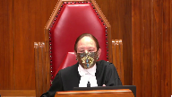
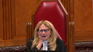
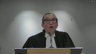

Felice Colucci v. Lina Colucci
This transcript was made with automated artificial intelligence models and its accuracy has not been verified. Review the original webcast here.
Justice Wagner (00:00:29): In the case of Felice Colucci against Lina Colucci, for the appellant Felice Colucci, Richard Gordner and Michael Gordner, for the respondent Lina Colucci, Cheryl Goldheart and Surinder Multani, for the intervener West Coast Legal Education and Action Fund Association et al.
Jennifer Klink, for the intervener Canada Without Poverty, Kaylee Joan Anderson.
Mr. Gordner.
Speaker 1 (00:01:17): Thank you, Chief Justice.
Good morning, Chief Justice and Justices of the Supreme Court.
This case deals with the proper treatment for cancellation of arrears of child support pursuant to Section 171A and 4 of the Divorce Act.
I would like to begin my remarks by stating what Madam Justice Abella said in the minority opinion in DBS.
Fairness is the holy grail of family law.
This is fairness not only to the recipient, but to the payer as well.
The primary principle is that each person must pay in accordance with his income or her income and the guidelines.
This primary principle and my respectful submission should take precedence over all other considerations.
All other considerations must be subordinate to this primary principle.
I would like to say at the outset that in my respectful submission, there is no longer any residual discretion to forgive support arrears on the basis of a hardship application.
There must be a material change in circumstances.
This would not be in keeping with the federal child support guidelines, and in fact, this would encourage payors not to pay on the hope that the arrears eventually would be canceled at some later date.
Justice Abella (00:02:54): Sorry, can you explain what you’re saying?
Are you talking about section 10 of the child support guidelines, the hardship provisions?
Are you saying they’re no longer applicable?
I want to be sure I understand what you’re saying.
Thank you, Madam Justice.
Speaker 1 (00:03:08): I apologize, I didn’t explain myself very well.
There is a line of cases out of Ontario that you can forgive arrears that have accumulated appropriately in accordance with the guidelines or before the guidelines were in effect on the basis that the payor just didn’t have the ability to pay anymore.
And so they would cancel or they would consider canceling those arrears.
That was cases like hoarding or where there was a large amount of arrears and he didn’t pay in accordance with what he was supposed to pay and he comes back later or the payor comes back later and says, well, I have all these arrears now, I wanna cancel it.
My submission has nothing to do with section 10 of the child support guidelines.
In the case at Barr, the appellant is requesting the arrears be reduced to the amount he should pay in accordance with his income and the guidelines.
That’s in accordance with the primary principle.
In fact, that’s exactly what the trial judge, Mr. Justice Hawken did.
He fixed the arrears in the amount in accordance with the guidelines and imputed income.
He discharged the arrears over and above what the applicant would have had to pay pursuant to the guidelines and imputed income.
So whatever was over and above what was imputed based on his income and what was imputed, those arrears were discharged.
Now I would submit that I’m not going to discuss the issue of a material change really because clearly there was a material change in this case.
The material change is pursuant to section 14C of the federal child support guidelines.
The guidelines came into force on May 1st, 1997 and the order of the Honorable Mr. Justice McMahon was May 13th, 1996.
So clearly there’s a deemed a material change.
I’d also point out that 14B of the federal child support guidelines apply as well.
But I’m not going to deal with material change in this case because clearly there was a material change.
Justice Côté (00:05:34): So Mr. Gordner, when you say that there was a material change in circumstances, you are referring only to the coming into effect of the guidelines?
Speaker 1 (00:05:47): I’m referring to the coming into effect of the guidelines, but also 14B of the federal child support guidelines would also apply, and that section says that if there’s been a material change in the circumstances where the order was made not under the guidelines, that will be a material change as well.

But 14C clearly applies here because of the coming in force of the guidelines on May 1st, 2017.
Justice Côté (00:06:17): in the motion for change, motion to change, and I am on page 9, you say, there are details there of the change in circumstances, and among them you say that since the date of the divorce judgement, the respondent’s income has changed.
Are you basing your submissions also on a change in the respondent’s income?
Speaker 1 (00:06:45): I am.
I am basing it on that fact as well.
But in my respectful submission, well, there is two under 14C and that would be under 14B of the Federal Child Support Guidelines.
So yes, I’m basing that on both.
But clearly, there is a material change based on the coming in a force of the guidelines.
I don’t know that you would really have to look at 14B in this case.
Overlapping speakers (00:07:10): Okay.
Speaker 1 (00:07:10): because clearly 14C applies.
So there is a material change in circumstances.
The issue before the court, however, is where there has been a material change in circumstances and a party wishes to have the arrears canceled, what are the factors that the court should consider?
This is the issue before this Honourable Court.
And there are two distinct approaches.
The first approach is out of Ontario, which says the DBS factors apply, and they’ve modified those DBS factors to look at the payor’s blameworthy conduct and his failure to pay the outstanding arrears.
New Brunswick, on the other hand, says the DBS factors don’t apply.
They will reduce it based on whatever the material change is and the guidelines.
Their test is would the application for reduction of arrears have been granted, but for the payor’s untimely application.
There’s no blameworthy conduct, and we look at what the date of the material changes, and we adjust the arrears on that basis.
My submission is that’s in keeping with the primary principle that you pay what you owe.
Justice Brown (00:08:30): Will you concede this much that under that approach where a payor has allowed arrears to accrue, that that approach conditions a reduction only upon a material change in circumstance which puts payors who fail to meet their support obligations in a better position when seeking a reduction than those who have actually met them but now seek a variation because they have to meet the DBS factors?
Speaker 1 (00:09:10): Well, Mr. Justice, thank you for your question.
It’s my submission that the payor, clearly the recipient, is in a better position if someone makes the payments all along than if they don’t. Yeah,
but I’m not asking…
Justice Brown (00:09:27): the recipient.
I’m asking about the payor.
Should the payor who is allowed arrears to accrue be in a better position to get a variation than a payor who’s actually met his or her obligations throughout?
Speaker 1 (00:09:41): No, I think they’re, thank you for the question, Mr. Justice.
I think they’re in exactly the same position.
Overlapping speakers (00:09:47): but there’s a different text.
Speaker 1 (00:09:48): in my respectful submission he is still going to have to pay all the arrears that is owing and all the enforcement in the government agencies that enforce that so he is in no better position he may be in a slightly better position
Overlapping speakers (00:10:04): It’s an easier test to get a variation.
Speaker 1 (00:10:06): Well, my submission is the test is the same whether he paid, if you’re asking me if he paid the lower amount, if he paid, if he had a material change and now he’s, he didn’t pay the full amount of the order, but he paid the lower amount in accordance with the guidelines in my submission, they’re in exactly the same position, except when we look at these modified DBS factors, he may be able to argue and say, well, I want my reduction from the original order because I’ve now cooperated in some way, but the amount that they actually have to pay still is exactly the same.
It doesn’t change.
Overlapping speakers (00:10:52): I think we’re talking past each other, so why don’t we just move on.
Speaker 1 (00:10:54): All right, I apologize if I didn’t answer your question, Mr. Justice Brown.
So the test in New Brunswick is, would the application for reduction of arrears have been granted but for the payers on timely application?
They don’t look at blameworthy conduct, they look at the effective date as the date of the material change.
Justice Abella (00:11:17): Can you tell me, sir, where would you put, let’s say it isn’t about blameworthy or not blameworthy conduct, let’s just say it’s just a question of income.
What is the income at relevant times of the payor?
Would you put any weight on when the payor, who of course is the person who’s got the information about whether or not he or she can pay, where would you put the obligation to disclose that status, that financial status, or any change to it to the recipient?
And at what point then does it become relevant in the exercise of discretion about cancelling arrears?.
Overlapping speakers (00:12:13): Thank you for your question.
Justice Abella (00:12:14): Speaking in the level of principle, but we have to be clear about what we’re discussing.
And the key is that only one person knows what the financial situation is and when it occurred that could ultimately lead to a reduction.
Speaker 1 (00:12:33): I agree with that.
But in these cases, when you’re canceling arrears, the onus is on the payor to produce enough financial information and proper financial information that the court can then reduce the arrears to what he should be paying.
The onus is on him.
If he’s unable to do that, then the court will dismiss his application.
It’s in his best interest when he brings his application to vary to produce as much information as he can.
Because if he doesn’t, the trial judge will say, I’m not satisfied with what you’ve provided.
We’re not going to cancel the arrears.
You’re going to pay on the original order.
Overlapping speakers (00:13:21): But at what point does that duty arise in your view?
Speaker 1 (00:13:24): Well, in my submission, it’s up to him to do it, and I’m saying he can do it, there’s no, if we look at Brown and Brown, that he can do it at any time.
If when he brings his application, remember these are just arrears that have accumulated, so if he brings a motion at any time, very late on in the proceeding, and now it looks like there’s going to be a repayment of money that the recipient, as it was in Gray and Rizzi, that there’s going to have to be a repayment by the recipient, then I would say the DBS factors have to apply in that case.
There is prejudice to the recipient in that case, but where the arrears have just accumulated, as Mr. Justice Robertson said in Brown and Brown, there’s no prejudice to anyone.
Overlapping speakers (00:14:16): What is this?
Speaker 1 (00:14:16): just a debt that is being reduced.
He still has to pay the proper amount.
And if he doesn’t provide sufficient information, the court will not grant his request.
It’s his onus.
Justice Abella (00:14:29): And how does that play out in this case?
Overlapping speakers (00:14:33): I’m sorry, in what respect are you asking that?
Justice Abella (00:14:36): these principles apply to the facts of this case?
What does that argument take us to in connection with Mr. Colucci?
Speaker 1 (00:14:45): Well, that’s exactly what Mr. Justice Hawken did.
He said, you have to provide me with sufficient information that I will vary the order, which he did.
He said, the information you’ve given me suggests you’re well below employment, you’re underemployed, I’m going to impute income to you, which he did.
So he fixed the amount based on what would have to have been paid, had it been paid, had there been a timely application earlier to vary it.
In other words, what I’m submitting is that, if the payor brought a motion to vary back in 1998, Mr. Colucci had done that.
And he brought his application, and he got his support varied.
And for the sake of our discussion, let’s say he has to pay $41,000, which was the end result ordered by Mr. Justice Hawken.
But during that period of time, he does not cooperate with the enforcement agencies.
He does not, he leaves the jurisdiction.
He doesn’t make any voluntary payments.
He doesn’t bring a timely application.
He doesn’t work with the enforcement agencies.
And he doesn’t pay.
At the end of the time, after 20 years, he’s going to owe $41,000 plus interest.
If, on the other hand, he doesn’t bring that timely application, still doesn’t cooperate with the enforcement agencies, makes no voluntary payments, willfully doesn’t comply, leaves the jurisdiction, now he doesn’t pay $41,000.
He pays $170,000.
That $130,000 in my submission is a penalty that he is being bound to pay on the basis that he didn’t bring a timely application.
The difference between the two scenarios is not whether he cooperated with the enforcement agencies or whether he made voluntary payments.
The difference is that he didn’t bring a timely application.
I would ask your indulgence and give you another simple example of using Mr. Colucci.
If Mr. Colucci had brought an application in 1998 when he advised his wife that his situation had changed, and he had his order varied, and at the end of 20 years, the amount we would say would be $41,000, he still didn’t cooperate.
But the $41,000 was paid.
It was paid through garnishment.
He didn’t cooperate with the enforcement.
They brought the fault proceedings.
But he did, at the end, pay $41,000.
So at the end of 20 years, in my respectful submission, he owes nothing.
He didn’t bring an app.
If he doesn’t pay $41,000, he doesn’t pay $41,000.
He doesn’t pay $41,000.
Justice Abella (00:17:42): application, did he?
He did not bring an application in 1998 when his circumstances changed.
He sat on his responsibility for 16 years and then came and said, I’m really sorry I didn’t do it but can you forgive me because now I can’t afford to pay.
I mean, in terms of principle and how we deal with support obligations for children, how does that make sense?
Speaker 1 (00:18:10): Well, it’s not a situation where Mr. Colucci came forward and says, I’m not able to pay.
It’s a situation where he came forward and said, I want to pay in accordance with what I should have paid.
The only difference in the two scenarios, and I would give you a second scenario, which I think brings it home much clearer.
If he, I indicated if he brought his, if he brought his early application in 1998, and he didn’t cooperate, but ended up being garnished for $41,000, and after 20 years, he’d owe nothing.
Overlapping speakers (00:18:47): You’ll be-
Speaker 1 (00:18:47): If he doesn’t bring the application, and he still doesn’t cooperate, but has garnished $41,000, he now owes $130,000.
Justice Abella (00:18:56): But the step that I think we seem to be dissonant about is didn’t he have an obligation when he is the only person who would have known, had a duty to disclose, did nothing to disclose?
You seem to be glossing over that and say
but when he does disclose, he’s no longer in a position to pay what he was legally obliged to pay his children and so look at it in a completely different way.
And I’m missing how he gets away with, the payor, a payor gets away with not doing what the law requires him to do, namely apply to vary when he knows that there is a change in circumstances that will affect his ability to pay and instead walks away and leaves these children without any support.
Speaker 1 (00:19:58): I’m agreeing with you that if the test is we want him to bring an early application, I’m agreeing with that.
If that’s what the court or the legislature says, we want you to bring an early application upon the heels immediately of a material change, then that is the test and I’m not disagreeing with that.
The point I’m making is that in both scenarios that I gave you, the only difference in the two situations is in one, he brought an early application and by failing to bring that early application, because we know if he brought the early application, his payment would have changed.
It would have been in accordance with the primary principle and exactly what he’s supposed to pay.
Justice Abella (00:20:43): only if he was able to show the judge that, in fact, he was in a position of not being able to pay.
So we are now being in a position where we have to make assumptions about whether or not he was telling the truth or not.
The time to do it is when he had that information.
So I mean, it’s a question of what are we doing to the whole system of child support if we say you have no obligation to disclose as soon as you know you’ve got a problem.
I thought that was a basic principle.
Speaker 1 (00:21:19): I’m not disagreeing that he should probably disclose as soon as he has that information.
But at the end of the day, these are just arrears that have accumulated.
They’re just a number.
Justice Wagner (00:21:33): Excuse me, what about the expectations of the recipient, parent?
During all those years, I mean, what do you make of that argument?
Because I understand your argument that he would not make any changes because he would have obtained the order reducing his payments.
What about the parent who receives the child support and is not aware of what’s going on and is expecting to receive the same amount?
Speaker 1 (00:22:04): I again, thank you, Mr. Justice.
I’m agreeing that she may be expecting to get that amount, but had the person, the payer, brought an early application, she would only get the 41,000 in this case.
Really, at the end of the day, what’s happening-
But the question-
Justice Brown (00:22:20): The question is a little more fundamental.
You say that this is a situation where arrears have just accumulated and there’s no prejudice to anyone.
But in anticipation of those arrears being cleared at some point, the recipient parent might well have prejudiced herself by, for example, taking bridge financing to get the kid into university.
You’re going to, it’s not a no prejudice situation.
I think that’s, yeah, that, yeah.
Speaker 1 (00:22:53): Thank you, Mr. Justice.
If in my respectful submission, if the recipient can demonstrate some prejudice or detrimental reliance, because remember we’re still making him pay the amount that he’s supposed to pay in accordance with the guidelines, but if she can demonstrate some prejudice that because she didn’t get this money she, you know, she borrowed money against it or she got a loan on the basis of this, or can somehow show some prejudice, then in my submission that should be a factor.
There’s no need to…
Justice Abella (00:23:29): on her.

She has no onus as a recipient.
She is the recipient.
To say you can only get what you are legally entitled to get if you can show that it really hurt you and that you couldn’t manage is bizarre.
It’s a debt owed to the children.
The presumption is there is prejudice if it’s not paid.
That’s why it was made in the first place.
So it seems to me you’re switching burdens here in a case where one party has the obligation to pay, the other party, the children, are entitled to receive the money, and there are all kinds of excuses now in the way of getting between A and B.
Overlapping speakers (00:24:13): That’s not-
Justice Abella (00:24:14): our case law and it’s not the law, period.
Speaker 1 (00:24:18): Well, I understand, Madam Justice.
I guess the best way I can put this to the court is that the only difference in the two applications, as I’ve described it, is in one case he’s brought an early application immediately.
He pays the same amount.
He pays the $41,000.
If he doesn’t bring the early application, he pays $170,000.
Overlapping speakers (00:24:42): But you’re assuming… Sorry.
Finish your sentence.
Speaker 1 (00:24:45): Sorry, pardon me, so he’s in my respectful submission We know what he should have paid if I agree with you
There is I would put some onus on the recipient to show because she’s still getting the proper amount of support
So my submission would be that you have to show some prejudice the the theory in Brown and Brown is that there is no prejudice to either party because it’s just Arrears that are being cancelled.
She didn’t get the money anyway So we’re reducing that debt saying there is no prejudice to the pay or the DBS factors Shouldn’t apply because there’s no prejudice to the pay or because he doesn’t have to pay additional money
And there’s no prejudice to the recipient because she’s not being asked to repay any money, and I’m Adding it the presumption is as you say that she was she did suffer prejudice Because she didn’t get the money, but she’s going to get exactly what she’s entitled to but for the timely application
So you’re I agree with you during that period of time.
She says I expected to get this money I was supposed to get this money, but I didn’t get it
Overlapping speakers (00:25:56): So, Kat?
Speaker 1 (00:25:56): got it and the amount that’s owing is exactly what I should have got and if in my submission as opposed to a presumption if there’s some evidence that she suffered some prejudice as a result of that then I think that should be included when Mr. Justice Robertson said other relevant factors that they may very well be other relevant factors in that case but the money wasn’t paid.
Overlapping speakers (00:26:21): So to anticipate…
Speaker 1 (00:26:22): the money in my respectful submission isn’t prejudice unless she did a budget and got the money or thought she was going to get the money and as a result, she did something that in some way, relying on that to her detriment, she should be compensated for that.
So are you finished now?
I’m sorry.
Overlapping speakers (00:26:41): I’m sorry.
Justice Karakatsanis (00:26:42): No, no, in terms of your two scenarios and your submission that there’s really no difference, I think we have to accept two things in order to agree with your submission.

One is that we only look at it from the payor’s perspective and the second thing is that we ignore the fact that there was a court order.
You say she wouldn’t have gotten, she got the proper support, she only is getting what she’s entitled to, but as I say, the only way we can agree with your submission is to say that the court order is irrelevant, that the court order did not set an entitlement to support and that we just disregard the fact that there was a court order and look only at the income of the payor and to nothing else, unless there’s some exceptional circumstance.
So why, how is that consistent with our case law?
How is that consistent with the fact that we have someone who’s asking the court to exercise its discretion to vary a court order that has simply not been complied with?
Speaker 1 (00:27:55): Thank you, Madam Justice.
My submission is, my respectful submission is that the only difference, I agree there’s an order outstanding, the only difference in the scenarios is that he didn’t bring a timely application.
That’s what Mr. Justice Robertson points out and that’s why the test in New Brunswick is only whether they brought a timely application.
It has nothing to do with enforcement.
As I gave you in the example, at the end of the day, he would owe the same amount.
The only difference is now he’s paying on the original order because he didn’t bring a timely application and if this honourable court says, well, he has to bring a timely application and he should bring a timely application and because he didn’t bring a timely application, we’re going to make him pay all the arrears, not in accordance with the primary principle, which is you pay what you owe, but we’re going to make him pay in accordance with that original order and I’m not necessarily disagreeing with that.
If the court determines you must bring a timely application within 36 months of the material change, if that’s what the legislature says or if that’s what this honourable court says, then he’s going to know.
If he doesn’t bring it within 36 months, he’s going to have to pay on the original order.
But that’s the only difference in my submission.
Justice Martin (00:29:26): this difference if we’re talking about a timely application, for example, if an application was made in 1998 here, there would have been a requirement to produce then current and reliable income information and at that point a court may have said, oh, let’s go behind.
They’ve made an agreement in 1996.
The agreement included no spousal support and there was a different tax regime.
So on a go forward basis, maybe Mrs. Colucci would be requesting spousal support.
Maybe the children’s amounts would be different.
So that’s the kind of thing that may have occurred.
But throughout, and I think this is a problem that I perceive with this going back so far, is that at a given moment in time, a court would insist on then current information.
And what we have on the record here is his assessment of what he made in the United States without any income tax information from the United States, his statements about what he made in Italy and absolutely no statements from anyone else about what that might be.
But a timely application would require the production of timely and reliable information so a court wouldn’t be guessing about the thing that seems to be at the crux of your argument, which what is the amount owed?
And aren’t we required to make sure that under your system, whatever that amount owed is, is accurate and based on full and reliable disclosure.
Speaker 1 (00:31:17): Thank you, Madam Justice.
I agree with that comment.
It was not up to the the information or the financial disclosure was provided to Mr. Justice Hawkins.
He reviewed it and accepted it.
It would have made no difference in my respectful submission given the level of his income in any event because income was imputed to him because he was underemployed.
But regardless of that, I agree with what you’re saying.
Obviously, the information, the financial information, if you bring an early application, it’s going to be fresher.
But at the end of the day, Mr. Justice Hawkins, who did not have to accept that evidence and said, I am not satisfied with this, did accept it.
And he was satisfied with it.
And he said, it really doesn’t matter because he doesn’t make any money anyway.
And I’m going to impute income to him.
So he certainly could have said in my respectful submission, I’m not accepting this information.
It’s not complete enough.
And I’m not going to grant you the onus on you.
I’m not going to grant it.
But he reviewed it and he accepted it.
There is several other reasons why
and I’m referring specifically to these modified DBS factors.
What they really work towards in my submission is enforcement.
They’re designed to encourage the payer to pay in accordance with the order.
And my submission is that they don’t really do that.
What they do is they incentivize the payer to bring an early application.
That’s what they really do.
It doesn’t matter whether you cooperate, you pay, you voluntarily or anything else.
Because if you don’t bring an early application, you’re going to pay the big amount.
And if you bring an early application, you won’t.
So none of those factors, these modified DBS factors that say they’re going to incentivize the guy, the payer to pay, just they don’t do that.
They incentivize them to bring an early application.
In my submission, there are other problems with those factors.
If these modified factors in my submission are very onerous and they’re very difficult to comply with, these are generally persons in my submission whose income has dropped.
They’ve gone from 60,000 down to 30,000.
They’re now being garnished at 50%.
The conduct that we’re going to assess in this case is did he voluntarily cooperate with making payments whereas income has already dropped?
These are persons who have lost their jobs or are disabled or an illness.
And that was mentioned by Mr. Justice Robertson at paragraph 20 of his decision of the decision in PMB.
Also, Mr. Justice Basterash in DBS at paragraph 101 on the reverse side said, well, we can’t hold these people to a very high standard.
They may not have the money.
And this was on the issue of the recipient failing to bring a timely application for a retroactive variation.
And they said, well, there’s reasonable excuses why you may not do it.
You may not have the financial or the emotional means, et cetera.
You may have got bad legal advice.
That’s set out at paragraph 101 of DBS.
And also the same set of circumstances is set out in page, sorry, paragraph 85 of Michel and Graydon, the most recent case.
So what standard these factors are so difficult in my submission and they continue to expand now including almost a bright line of a three-year limitation.
If you don’t bring it within three years, you’re going to pay the full amount.
And of course, there’s no way they can get out.
The only way they can do it is bring a 17 application or motion under section 17.
They can’t extinguish it in any other way.
Overlapping speakers (00:35:54): What’s wrong with that?
Speaker 1 (00:35:57): Well, in my respectful submission, there’s nothing wrong with that, but I’m saying it’s not coinciding with the primary principle in my submission.
He’s now being asked to pay, yes, in accordance with the order, but significantly more than he would have to pay in accordance with his income in the guideline.
Justice Abella (00:36:17): Can I ask you if you could point us to where in the record before us is some explanation for why he didn’t pay from 1998 to 2016?
Overlapping speakers (00:36:31): why he didn’t pay for the 1998 and 2000.
Justice Abella (00:36:33): You talked about debtors in general, payors in general, how difficult it is for some of them and I of course accept that.
But the circumstances here, where can we find the extenuating circumstances that explain the non-communication, non-disclosure, non-payment over the 16 years for Mr. Colucci?
Is it somewhere here?
Speaker 1 (00:36:57): No, thank you, Madam Justice.
No, it’s atrocious conduct.
There’s no doubt I’m conceding the fact that he never made the payments.
The point I’m making is that whether the conduct was atrocious or not, had he brought an early application, he wouldn’t be paying all this money.
The only difference in my submission as I’ve indicated, his conduct throughout that period of time really makes no difference.
It’s whether he made an early application or not.
That’s the only thing that matters.
Also, so I’m submitting and I’m referring specifically to these DBS factors, these modified DBS factors.
They are very difficult.
They are onerous for these people to comply with.
If you don’t comply with them, you’re going to have to pay in accordance with the full order.
Also, these factors in my submission are complicated, they are extensive, they’re ever expanding.
They now include a three-year limitation period.
When the court at first instance has to make a determination, we’re going to be left with some unfettered discretion about how to apply these factors.
Well, he made some voluntary payments.
Well, he didn’t really cooperate.
These people generally are already in a situation where they’re financially handicapped.
To ask them to voluntarily make payments and to cooperate and to work with the enforcement agencies where their income has already dropped significantly, and there’s order that they can’t comply with that’s more than they should.
We’re going to say, in this case, the court is going to have to assess all this conduct and say, well, you’re going to end up in my respectful submission.
We’re going to end up with very different results.
We’re going to end up with costly, inconsistent, and unpredictable results as each judge assesses his conduct as it relates to whether he properly complied with these modified factors.
Justice Rowe (00:39:08): I guess, sir, that what I’m hearing from my colleagues and in many ways I share is that the factors seek to give effect to a view that persons who are subject to a court order, in this instance for the payment of child support, should first be honest and second should be mindful and respectful of their obligations pursuant to the court order.
And if they fail to do so, there will be consequences.
Speaker 1 (00:39:48): I agree with that Mr. Justice and the consequences are if you don’t voluntarily make payments or you don’t cooperate with the enforcement agency we’re not going to vary the order in accordance with the guidelines in your income.
We’re going to make you pay the original order and that in my respectful submission is a penalty.
No one, it would be extremely difficult for these persons, these payors to if you look how onerous these factors are to comply with those factors.
There is also in my respectful submission a perverse incentive to the recipient not to cooperate because they are going to point out every error that the payer made they’re going to raise every possible objection with these DBS modified DBS factors saying well he made one voluntary payment
but he didn’t make other ones.
So let’s uh because he didn’t comply with these DBS factors therefore he has to pay on the basis of the original order.
That in my respectful submission will also result in costly and hostile litigation.
It will increase the litigation that we’re going to be faced with because it’s in the recipient’s interest to fight against that application to vary.
Well I guess so.
Justice Brown (00:41:15): But, you know, you were speaking of incentives earlier, all those consequences, if in fact those are the consequences, that this is somehow the invariable result of the application of the DBS factors, that every time there will be no change because they’re so onerous, doesn’t that put the incentive, where it should be, upon the payer parent to either discharge his or her obligations under the order or seek a variation in a timely way with proper disclosure.
Overlapping speakers (00:41:54): if we’re going to talk about incentive.
Justice Brown (00:41:55): it seems that the incentives kind of work the other way.
Speaker 1 (00:41:59): Thank you, Mr. Justice Brown. I agree.
The issue, though, is does he bring the timely application?
It’s not reflective of his conduct.
If he brings a timely application, it doesn’t matter what his conduct.
He doesn’t have to comply with any of those factors, but he pays the lower amount because he brought a timely application.
And that’s what Mr. Justice Robertson is saying.
Blameworthy conduct doesn’t matter, because, as I said, if he brings a timely application, doesn’t comply with the factors, he pays the lower amount.
Now, it may be, as I said, that you may say, well, he’s got to bring a timely application.
If that’s the law, then I understand that.
But the factors don’t make him pay.
They make him bring a timely application.
He has to bring a timely application.
As I indicated, the other, one of the other factors is that this will be, will result in an incentive to the recipient to not to comply.
Overlapping speakers (00:43:07): Why?
Speaker 1 (00:43:07): it’s going to result in costly and hostile litigation.
And as Mr. Justice Bastarash said at paragraph 120, this will result in the parties expending funds that would be better used for the children.
Justice Karakatsanis (00:43:22): Can I ask you this?
You’ve said several times that the DBS or modified DBS factors would not provide an incentive to pay, it would provide an incentive to bring a timely application. Yes.
Isn’t that a good thing?
Thank you, Madam Justice.
Yes, of course it’s a good thing.
Does that address most of the problems that arise in it?
Speaker 1 (00:43:47): Madam Justice, thank you.
I agree 100% bringing a timely application would solve all the problems, but the legislature did not.
Justice Karakatsanis (00:44:01): But I guess I’m not understanding why you’re saying we shouldn’t have those kinds of factors.
They shouldn’t play a role because, whereas I think what you’re saying, I’m just not following why you say the factors shouldn’t be there because they don’t assist in getting payment, but you agree that it would be a benefit to everyone to bring a timely application.
Speaker 1 (00:44:32): The factors, these modified DBS factors in my respectful submission result in incentivizing people not to make the payment.
You’re telling, we’re going to tell these payors, look, if you don’t bring an early application and you know you’re not going to be able to comply with these modified DBS factors, if you don’t bring an early application, you’re going to have to pay the whole amount in accordance with the order.
Overlapping speakers (00:45:02): unless you bring an early application.
Speaker 1 (00:45:05): Correct.
I agree, Madam Justice.
Unless you bring an early application, that’s the point I’m trying to make, is that these DBS factors do not incentivize payment.
They incentivize an early application.
Early application is great.
It would solve all the problems, and I agree with that.
But the legislature didn’t include that.
The legislature didn’t say in 17.4, not only do you have to show material change, but you have to bring an application within 12 months of your material change, or something to that effect, or 36 months.
So, it’s very important, and I appreciate this is somewhat, you know, you have to follow the logic that these measures do not require payment.
They do not incentivize payment.
Justice Karakatsanis (00:45:56): I’m actually not following the logic.
I guess I’m just not seeing where the best interests of the child, the fact that there is a debt of support owing to the child, where that gets taken into consideration in the way that you are arguing your case.
Speaker 1 (00:46:16): The only, thank you Madam Justice, the only way I can explain it is to say that in my respectful submission, these factors do not make him pay, they simply make him bring an early application, they incentivize him to bring that early application.
Because if he doesn’t, he’s going to end up paying significantly more.
The factors themselves as I, in the example I gave you, if I could give you another example and say Mr. Colucci brings his motion in 1998 and gets it varied and is obligated to pay $41,000 but didn’t make any payments, he didn’t cooperate at all, so he doesn’t comply with any of those factors.
In that circumstance, he pays $41,000.
If on the other hand, he doesn’t bring the application, doesn’t comply with any of those modified factors, in any event, now he pays $170,000.
The only difference in the two is he brought a timely application.
And I’m agreeing with you, they absolutely should bring a timely application.
But it doesn’t, these factors, the Ontario court says you’ve got to use these modified blameworthy factors that deal with enforcement and I’m saying they don’t work.
They just make you bring an early application.
When Mr. Colucci comes into my office and says you better bring an early application because no one’s going to be able to comply with these modified DBS factors, then that may be exactly what has to happen.
Maybe it’s up to the legislature to make that change.
Justice Moldaver (00:47:49): Should we not be incentivizing the parties and particularly in your case, Mr. Colucci, even if he couldn’t bring the application, if he didn’t have the wherewithal, if he had some great excuse, which is nothing on the record to show, minimally, there’s nothing to stop him from communicating with his spouse, former spouse, saying, here’s my problem, my income has dropped, here’s my income tax statements, here’s what I’ve made, I’m giving you everything, full, complete and frank disclosure, and I’m not sort of hiding in the weeds, I’m not running off somewhere where you have no idea where I am or how you can reach me or how you can bring me back into the courtroom, it seems to me that you’re just kind of putting this all on, he had this obligation, the only thing that changes here is that if he brought his application early, everything would be wonderful.
The simple truth is there are other mechanisms and I think we should be incentivizing parties to work with each other, but most importantly, to make full and complete disclosure with each other so that if, as and when the matter does have to come to a court for resolution, we don’t have to start guessing and imputing and going through all these hoops that had to be gone through here to come up with some figure that is probably about as realistic as 30,000 or 60,000 or whatever, so that’s a long sort of statement, question, but why shouldn’t we look at the fact that he didn’t do anything to communicate to his spouse, and forget about the spouse for a moment, there’s children that are looking to be supported, that have the right to be supported, and this guy just takes off in effect for 16 years and then comes to the court and says, poor me, you know, and no, I don’t have any proper financial information, I can’t, you know, sort of prove this or that, but you can impute and all this stuff.
It’s a very bad way to run a system, and maybe some deterrent effect is warranted.
Speaker 1 (00:50:16): Thank you, Mr. Justice Maldivar.
I will say in this case there is facts that in 1998 his income dropped to $20,000 from $40,000 in 1998, and he went to his spouse and said, I’m asking for a reduction because my income dropped.
And he says in his material that I didn’t have the wherewithal.
She said no, she refused.
And I didn’t have the wherewithal to bring another application.
That’s the evidence.
But I’m not disagreeing with you.
We want payors to pay, but in my respectful submission, they should pay in accordance with what their income is in the guidelines.
I agree with you.
We don’t want them to wait 20 years because it would be very cumbersome to the court to have to sift through all this evidence and make sure that it’s accepted.
Obviously he has the onus, he’s going to have to satisfy that to the court.
And I’m in full agreement with that.
I would also like to make a submission regarding how these DBS factors were actually developed.
And in my respectful submission, they were developed out of the hardship cases where there were hoarding cases.
Gray and Gray and R versus Phillipich.
These cases were cases where the payor was saying that the recipient was hoarding the money and I was supposed to pay X amount of dollars, but she didn’t try and collect it.
So now I want forgiveness for that.
And in my submission, these modified factors clearly apply in that situation.
If someone is coming forward and saying, I want forgiveness from the proper amount of support.
In other words, if Mr. Colucci wanted, he’s supposed to pay 41,000.
If he wanted, he says, I can’t pay it.
I want forgiveness from below that.
Then I would say, yes, you have to look at did he cooperate with the enforcement agency?
Did he make voluntary payments?
Those in my submission, those factors would apply, but not in the case where he’s paying in accordance with the guidelines.
Justice Moldaver (00:52:41): I just want to go back with you for one moment because it took me a little bit of time to reflect on what you responded to me.

Minimally in the example that I gave you, he would have a complete record.
He would have a proper, complete, authorized, accepted record that shows, you know, he only made 20,000, not 40,000, that he tried to get the spouse to agree to some reduction.
She refused.
I didn’t have the wherewithal to go to court and you build a record that is based on truth and honesty and full disclosure so that when the time comes for the spouse, who has now been put on notice by the way, when the time comes for him to seek a reduction, if he gets the wherewithal to be able to go to court, there’s a full, complete and honest record that can be filed with the court.
Part of the problem with this family law stuff, great amounts of time are spent in litigation trying to track down, well, how much did you really make and how much are you really worth and you’re hiding assets and all this stuff.
And it seems to me that one of the most critical aspects of this is full and complete and honest disclosure at all points along the way.
Speaker 1 (00:54:08): Might I respond to that?
If Mr. Colucci had all that information and had every income tax return from 1998 right through to 2016, he still would have lost because he never complied with those modified DBS factors.
I agree with you, they have to produce the onus is on the payor if he can’t produce proper income tax return.
Justice Moldaver (00:54:34): I thought there was a big element of this was bad conduct on the part of your…
What’s the conduct of the payor?
If you could show conduct that was totally honest, totally frank, et cetera, that’s a big, big difference in terms of what the court might or might not do, which it seems to me when there’s a request to vary.
Speaker 1 (00:54:55): Thank you, Mr. Justice Moldevert.
What I would say is, if you apply these modified DBS factors, I agree with you.
He has to provide full financial disclosure and proper to satisfy a court.
But had he done that, had he produced every single income tax return or whatever evidence was required to show what he did or what he earned, he still would have lost because he didn’t comply with the modified factors.
He didn’t cooperate with the enforcement, they’d say, okay, I have a full record of your income.
I know exactly what you made, but unfortunately you didn’t comply with any of these factors.
You didn’t make any voluntary payments.
You didn’t cooperate with the enforcement agency.
So we’re not going to give you any reduction.
I agree wholeheartedly with your submit, with your analysis that of course he’s got to provide proper information.
Mr. Colucci in this case provided all he had, made three or $4,000 euros a year, but I agree with you.
But he gave what he had and some deference in this case should be given to the trial judge in my view.
He accepted this evidence, said I’m satisfied with this evidence and he’s underemployed.
He was underemployed all those years.
I’m going to impute income to him.
And that was the proper thing to do.
If he provided income tax returns that showed $3,000 and $4,000 a year, the judge would say, you’re underemployed.
I’m going to impute income to you.
In my respectful submission, I appreciate this isn’t a perfect case and certainly Mr. Colucci’s conduct is atrocious, never supporting his children.
But we know in 1999 and 2000, he got laid off.
He made $5,000 in that year and the income tax returns show that.
So in my respectful submission, it wouldn’t have mattered if he provided all that information in an example because he wouldn’t meet those factors anyway.
Whether he provided it or didn’t provide it, they would just say, well, you don’t meet any of these modified factors, so you got to pay the whole amount.
Justice Moldaver (00:57:03): Why don’t we wait for that case?
Justice Brown (00:57:06): Well and it seems significant that the reason he wouldn’t satisfy those factors, although they’re not factors to be satisfied, they’re factors to be considered by the court.

But the only reason is his own blameworthy conduct.
There’s kind of a, we’ve kind of crossed through the looking glass here.
The reason we shouldn’t apply the DBS factors is because he’s been such a jerk, he’d never satisfy them.
Speaker 1 (00:57:37): Madam, Mr. Justice Brown, you’re talking about the modified DBS factors that are set out in the Ontario court.
I’m submitting to you that no payor would be able to satisfy those.
It would be extremely onerous to try and satisfy, even with full disclosure, even if you wanted to make the payments.
And the point at the end of the day is they don’t, they look like they enforce payment, but they don’t.
They enforce an early application.
Because if you bring the early application and you’re successful, you don’t pay all the rest of the money.
Overlapping speakers (00:58:13): We’ve all agreed that’s a good idea.
Speaker 1 (00:58:15): I’m agreeing, I’m saying, but unless there’s something in the legislature or in the court that says, you must bring an early application or we’re not going to cancel the arrears.
Justice Brown (00:58:26): We apply that to section 15 too.
There’s nothing there about it.
Justice Abella (00:58:30): Mr. Gordon, can I ask you what you would do about the you put this whole thing on hardship to somebody who has simply walked away from his obligations for child support for years and years without notice and you put it on the what you say are the difficulties in the factors dbs or gray, whatever.
Where would you put the obligations that are set out in the child support guidelines for timely information, for the penalties to a spouse who doesn’t comply with the timely information, for the provisions for relief from the court in cases of undue hardship and for the adverse inferences that are set out when a payer doesn’t comply with the orders.
So it seems your argument is in a vacuum as if we didn’t have certain new expectations as of the child support guidelines for how we operate in the child support and spousal support area.
Like you’ve ignored all of those duties, statutory duties that are set out in connection with how support is ordered, calculated and enforced.
Including timing.
So are you saying they’re irrelevant to this analysis, this discussion?
Speaker 1 (00:59:58): I think I am.
I think I am frankly saying they’re irrelevant to this discussion.
There is obligations in the child support guidelines in terms of production of income tax information and other information but I believe I’d have to double check the section but pretty sure it’s on request.
There’s not a requirement to automatically provide this although I apologize I could be wrong.
There may be an obligation to automatically provide it but it seems to me it is on request that you can ask for the last three years income tax returns etc.
And in terms of undue hardship, undue hardship that section is undue hardship regarding it’s section 10 of the child support guidelines and that that is a section where the payor is asking to pay less than what the guidelines would demand on the basis of undue hardship.
Justice Abella (01:01:05): I guess my point is really kind of basic.
Since we have provisions and modalities for dealing with these very circumstances which theoretically amplify the wording of section 17, why wouldn’t we look at the theory behind those legislative enactments when we’re dealing with the very fact of support which was what those child support guidelines were about and in your client’s case were the trigger for the determination that there had been in fact a change in circumstances?
So you’re saying ignore them?
Speaker 1 (01:01:43): Well I’m not disagreeing that all those factors whatever’s in the child support guidelines including production that’s all that’s all should be included.
Again you’re you’re you’re considering this this conduct if there’s a requirement that he didn’t comply with proper financial disclosure then the court when he brings his motion to vary can certainly say this is this motion to vary we’re not going to grant you didn’t provide proper you didn’t comply with the guidelines in some way or you didn’t provide proper financial disclosure the onus is on him in that case.
Justice Wagner (01:02:23): All right.
Thank you very much.
Your time is up.
Thank you.
The court will take its morning break in 15 minutes.
We’ll be back.
Thank you.
The court is now adjourned.
It’s called heart.
Speaker 2 (01:03:55): Yes, good morning, chief justice and justices.
My name is Cheryl and I represent the respondent Lena, along with my co-counsel, who was the sole counsel in this case for the respondent at trial and at the court of appeal.
Ms. and I will be providing submissions on behalf of the respondent.
I will begin.
Overlapping speakers (01:04:19): Excuse me, is it possible to speak louder because we have a hard time to hear you. Sure.
Can you hear me now? Great.
Thank you so much.
Speaker 2 (01:04:27): I will begin and after a short introduction we’ll take the court through the framework that we assert should be adopted to apply to cases involving requests for to retroactively adjust child support and we’ll also adopt and we’ll also discuss the important societal goals and that this framework embodies and achieves.
Ms. Multani will then speak to the specific facts of the case and how the framework applies to the applies to come to the right conclusion in our submission that the appellant Mr. Colucci should not be relieved of his obligation to pay arrears of child support that had accumulated over the period of 15 years.
Before I begin I would like to direct the court to tab A and B of the Respondent’s Condense Book which sets out our framework that we urge this court to to endorse to be applied to claims where a retroactive adjustment is sought.
I would point out before I go through this analysis that the one word that I did not hear from my friend in his submissions although I heard it from the bench the one word that I didn’t hear in my friend’s submissions was the child and I’d like to keep that at the forefront of my submissions.
The four-stage framework was extracted from the decision of Justice Chapel at the Ontario Superior Court of Justice in a case called Corsias and Burgess.
In that case Justice Chapel penned a treatise on the evolution of the factors to be considered when claims were made to retroactively adjust support.
This framework was then adopted and and accepted entirely by the Ontario Court of Appeal in Grand Rizzy and applied by that court below in the case before you today.
The factors contained in the framework were annotated by Justice Chapel in a case called Templeton and Nuttall which annotation is relied on and set out at tab B of the our condensed book.
For the first time since the landmark decision of DBS this court has an opportunity today to clarify the confused jurisprudence that followed the decision and in doing so to remedy the injustice experienced by many Canadian children and their caregivers who are still statistically women.
Well this particular case is about the child support owed for the children of Lina and Felice Colucci.
The focus of this appeal is on how our legal system deals with the payment of child support, understanding the problems created by the non-payment of child support and how that impacts all the players in the arena, the recipients, the payors, various governmental support enforcement agencies, social services and most importantly the children who are entitled to benefit from the child support.
Notwithstanding the best intentions of our legislators and courts including this court’s comprehensive review of child support in DBS, claims for retroactive adjustments of child support continue to result in unprincipled outcomes that more often than not ignore the core principles of child support, the objectives of the child support guidelines and the lived realities of Canadian children and their caregivers.
In the years that followed DBS, courts across Canada attempted to apply the principles enunciated in that case but often only paid them lip service.
In the result as noted by this court in Michele, what we have is jurisprudence that is muddled, confused, contradictory and divided across Canada, and divided across Canada leading to injustices for both children and recipients including at the trial level in the case before you today.
If judges have been confused about the application of DBS, it should come as no surprise that council and parties have found themselves equally without clarity as to how the jurisprudence should apply in a specific situation.
The proposed framework provides much needed clarity and a consistent approach moving forward by responding directly to this confusion and specifically the inconsistent application of the three-year rule and the concepts of effective informal notice.
Which concepts came from DBS but were then misunderstood and misapplied thereafter?
By implementing the framework we propose, clarity and consistency is achieved in three ways.
First, the factors from DBS are expanded to account for the totality of the circumstances that led to the non-payment of child support as well as the impact of that non-payment.
Secondly, there’s an emphasis on timely and complete financial disclosure with the focus being shifted from the recipient, as was the case in DBS, to the payer who, as this court noted in DBS, holds all the cards.
And finally, by mandating a review of the child support owed for the retroactive period in context with all other relevant facts and dates, the three-year rule is placed within a flexible temporal scope.
Specifically, the framework views the dates of effective and formal notice not as determinative but as part of a bigger picture along with any alleged material change, the assertion that the child support guidelines themselves constitute notice, and the timing and quality of the financial disclosure as that necessarily forms the starting point of any meaningful negotiations and or the recalculation of child support.
Written for self-represented parties in Cose of Corsails by Justice Chappell, and guided by the four core principles of DBS, the framework clearly sets out the rules of engagement and the standards of conduct by which parties will be judged when coming to court to address retroactive changes in child support.
Given the frequency in which self-represented parties appear in family court, particularly with respect to child support, it is imperative that this court endorse a test that the average Canadian can follow to ensure that the child support reaches the children for whom it is owned, when it is owed, and in the amount that is owed.
This also has the added advantage of reducing conflict between parents, which naturally benefits children.
Justice Kasirer (01:12:08): Can I stop you?
Let’s say one is broadly sympathetic to the Ontario line of cases as opposed to the New Brunswick precedent.
That’s a holistic approach.
Are you sure that the four factors in DBS layered on top of which we find seven factors in Templeton and Corsios is really something that will simplify matters and make matters conducive to settlement, to self reps being able to make their case.
In your tabs it’s three pages of factors and the factors run into one another.
I’m wondering if you’ve contemplated the simplified criteria offered by the leaf intervener.
Speaker 2 (01:13:12): Yes and in fact notwithstanding that there is a quite a lot of detail in Justice Chapel’s decision in Templeton where she where she annotated further the factors that were set out originally in Corseus and and accepted by the Court of Appeal in Grey.
What she has done if you look at those factors is just set out questions for judges and parties to to allow for the the questions to ask themselves as to as to whether the particular individual coming before them or family coming before them has has has satisfied the various obligations.
If you look at that test you can actually break those factors down into three separate categories.
It’s it’s the
it’s the conduct of the payers looked at the financial circumstances of the payer and the recipient and hardship.
You can break all those factors down to sort of three primary categories and it can be somewhat simplified in in terms of in in terms of someone who may not be a lawyer reading them.
It’s in it’s in English and it is it is in simple English and it it can be applied and it’s important to apply so that a judge exercising his or her discretion can get a true sense of what has gone on in the case by asking the questions that are set out to to come to the come to the decision that a judge will come to ultimately.
Justice Kasirer (01:15:08): I guess my concern is that if the, in family law matters, going to court is often a last resort.

And if there’s a way to settle matters more effectively with a simple series of rules, maybe the child will be better off.
As you say, DBS makes the point that hostile litigation often comes at the expense of the recipient and the child at the end of the day.
And I’m just concerned that the long list is too long, and whether the presumption set forth in the leaf factum might save a lot of time and money.
Speaker 2 (01:15:54): Yes and and certainly a test can be developed that that can that can take into account all of that and in fact the concept the contextual analysis that we are proposing is does not set a clean line in the sand as opposed to the presumption that LEAF is suggesting.
The presumption is extremely persuasive but we have to we have to be very careful with with presumptions or and saying that that’s the starting point because there we saw what the unintended consequences is were in the comments made after DBS came out so instead of reading clearly what Justice Basterasch was saying both at paragraph 121 and one and at paragraph 98 there has been so much litigation where where judges have twisted themselves into pretzels to try to deal with those comments.
What we’re saying is set out a test that that we can follow this is the test that we thought would would best deal with with these situations when the situation is that there is a material change.
These cases are only about material change my submissions are that there are two separate types of cases that are coming to court the material change cases and the current and ongoing inability to to pay cases which were in my with the greater respect to my friend not as clear in the submissions.
However the any test that will come to the same conclusion with a presumption or otherwise I welcome that.
I just am concerned about a a presumption that will later on just be a line in the sand and and there you go in terms of in terms of being misapplied later on.
Justice Kasirer (01:18:14): I guess one of the concerns is that family law courts have tried to avoid disputes around blameworthy conduct in the context in which we’re working, blameworthiness for arrears is going to be very, very common.
Overlapping speakers (01:18:32): Mm-hmm.
Justice Kasirer (01:18:32): That kind of debate in a trial court is not always useful, and oddly enough, may come back to haunt a recipient parent when Hickey and Hickey is invoked against an unfavourable finding on blameworthiness, whereas a presumption which has built into it a circumstance where, let’s say, effective notice must be shown, and if it’s not, in the absence of full financial disclosure, that’s the end of the story, might end up doing the work and saving everyone time and money.
Speaker 2 (01:19:20): It may well, it may well.
We have looked at it in more of a contextual basis.
As I said, a presumption is extremely persuasive, persuasive.
And, you know, in terms of the conduct itself, certainly conduct has no place in certain areas of family law.
But we, we, we see in DBS, that’s where this concept of blameworthy conduct comes up.
It’s our leading case.
It looks at the misbehavior of a payor in terms of their payment of the fundamental obligation that they have to pay the child support that they owe.
And when they don’t, you know, there are consequences for that behavior.
And it’s really not about con conduct, but about incentives.
So as one of the justices mentioned in earlier questions, in comments, that there’s, we want to incentivize, we want to payors to pay, because if they don’t, and they don’t quickly bring applications to change, there will be consequences for that behavior.
Justice Rowe (01:20:35): It’s interesting, one of the things that sometimes gives rise to confusion, of course, is that language is imprecise.
When I think of, let’s keep questions of conduct or fault out of family law, I think it’s like, well, you were a bad spouse.
You didn’t really care and fulfill your responsibilities as a good person.
Maybe that’s, we should leave that one aside, whereas adherence to court orders and sort of good behavior in that context is conduct but of a different nature.
Speaker 2 (01:21:12): Yes and our society runs based on all of us following the rules of law and there’d be chaos and anarchy otherwise.
Yes we’re not looking at the conduct of how these people lived with the one another and dissect what happened during their relationship but rather exactly what was just stated that court orders are not suggestions.
We have a great deal of jurisprudence that says exactly that, that court orders are not suggestions.
You got to follow them or take steps in a timely fashion to change them and in answer to the earlier question you know a framework allows a court to allows a court to go through all the go through all the factors that should have been you know that should have been in play but are perhaps not.
Also as mentioned by Justice Moldaver earlier nothing should a payer can should not be able to take a step without full frank complete fulsome however word we use they’ve tried so many.
Disclosure it’s the as we’ve heard from lower courts it’s the cancer of family law and we look and welcome very clear consequences for non-disclosure coming from our highest court since it is in fact the words the courts have are without words anymore to deal with with disclosure.
In fact a recent criteria court of appeal case took the cancer analogy and took it to the point of metastasizing and use the word metastasizing.
There are problems with our disclosure system that needs to be addressed and and so that any notice must be accompanied any notice whether you whether it’s a factor in our in a framework or it’s a
or it’s a presumption it has to be coupled with full and complete financial disclosure.
Justice Côté (01:23:30): So in this case, Ms. Gouldard, the trial judge said that he was inspired by Justice Chappell in Corsus and that he was going to impute income for certain years for Monsieur.
So what else should he have done?
Because you say that there is an obligation to disclose, and I agree with you that there is an obligation to disclose the financial situation, but the trial judge seems to have been satisfied with the financial information he had at the time.
Are you saying that this information was not reliable because the trial judge decided it was because he based himself on that to impute the income for the different years since 1998?
Speaker 2 (01:24:24): correct in fact there was no disclosure um certainly not from 1998 until he brought his
Overlapping speakers (01:24:32): I agree. 2016.
Yeah.
Speaker 2 (01:24:34): and so in fact the trial judge took what little he had and since he did not follow the Corsales framework in his decision or Gray and Rizzi he does suggest that he’s following some parts of Justice Chappell’s decision but then leaves out the whole framework which she had developed in Corsales so he came to court he somehow persuaded a trial judge that his income was lower there was no there was no objective evidence of that it was only except for a few pieces there was only his word so that particular judge took this this payers word for much of much of the information which he put forward and there was no independent evidence and in fact quite a bit of trickery in the sense that he provided information that was actually incorrect the the will that he said he he had from his mother’s estate was provided in Italian he would not translate it finally our client found some money to translate it and it turned out to not be a will at all but nothing most of the disclosure he provided what little he did was at the end of the day well after the start of his application
Justice Côté (01:26:08): I agree with that, but are you saying that it was not within the discretion of the first judge to satisfy himself with that evidence?
I understand that the evidence was not perfect when he was saying, for instance, that for many years he did not have the income tax returns, but do you agree that the trial judge had the discretion to satisfy himself with that evidence?
And he said, based on other elements, like the education of Monsieur, and to impute some income, because he did exactly what he said he would do.
Speaker 2 (01:26:44): Yes, so I did.
The imputation, absolutely.
And the court has the discretion to impute pursuant to the child support guidelines.
And the exercise of imputing that the particular, Justice Hawkins did impute, I say incorrectly, but a trial judge moving forward certainly has the discretion to impute income.
And in many of these cases, they do.
In this particular case, I say that he erred because he shouldn’t have imputed on just his word.
There should have been some cogent evidence to establish that he couldn’t work or only made cash or only made a small amount.
He provided nothing for the time that he lived in the US and he lived in Italy.
Justice Moldaver (01:27:35): the problem, that these cases drag on and drag on.
Or, as you say, there’s nothing.
That’s just his word.
And what are we to expect?
The recipient, who hasn’t been receiving payments for all this time, who has been obviously having to find extra money to support her children, now has to somehow have the funding to engage private investigators and accountants and forensic people and so on and so forth to go after this man, who has been hiding effectively for 16 years.
And one can only imagine how much that would cost, particularly when a good chunk of the time is out of the country.
I mean, it’s Alice in Wonderland to think, unless the spouse, in this case the wife, is totally independently wealthy, that she could ever come up with the kind of information that would be corroborative.
So to take the opposite point of view, it’s true that judges can impute.
But when the imputation is based solely on the word of the offender, shall we say, who cannot be cross-examined without the kind of investigations that would be necessary to uncover fraud, it’s a bit of a game.
Speaker 2 (01:28:56): I agree, Justice Moldaver, completely, and that is why, as the Court of Appeal said in this case below, that he shouldn’t have gotten out of the gate.
Without the disclosure, that should have been the end of it.
And in our Stage 2 of the test, disclosure is the most important piece of this, because if you don’t have the disclosure, you can’t even consider, the recipient can’t even consider whether to start negotiations and whether to turn their mind to whether a variation should occur.
They’re in the dark.
So it is punitive, but that payer should not get what he’s, in essence, is a remedy that is equitable in the sense that, you know, a rescission of arrears of a of a court order is being asked for.
Justice Côté (01:30:01): I have a question for you, I’m sorry to interrupt, in one of the affidavits in the file signed by Monsieur, he’s saying that he sold half of his, of the property inherited from his mom to his sister’s daughter-in-law, and he said that he was to get 30,000 euros from that. Yes.
Do we have anything in the file to tell us where that money went?
Speaker 2 (01:30:32): we don’t know where the money went
but we know it didn’t go to the recipient. Um it
it
uh did not get into her hands notwithstanding even Justice Hawkins Hawkins um ordered that he pay uh uh there was 15,000 euros that we’re still owing and he um and he and he still has not paid that. Okay.
Ignore any of the costs below.
Justice Martin (01:30:58): May I switch a little bit please and talk about the three year whether we call it a rule or from DBS.
I have two questions in respect of your submissions on that.
The first is does the same rule have to apply to a payer who is seeking a variation or cancellation of arrears as it would to a person, a recipient who is asking for increased or original child support.
So that’s my first question.
And my second question is if we do have a three year rule that’s premised on formal or informal notice, should this court be considering saying that there is no formal notice or informal notice without complete disclosure?
Speaker 2 (01:32:06): With respect to the second question first, I think that a pronouncement from this court that that you’re not going to get anywhere unless you provide full disclosure would be a welcome decision in my view.
It will potentially, because of what Justice Moldaver said, that we’re chasing down disclosure, it’s tying up our courts, people are being disclosure motions.
Frustrated, frustrated judges are having to deal with these on their docket every single day and I think that any time frame that is being considered by the justices be tied to disclosure
and I think we’re in complete agreement with the interveners on that point because they are arguing for a three-year rule in the retro, in a retro decrease case.
So the retro decrease case which we have here, it certainly would stop a lot of litigation about this but there could be, you know, it has to be rebuttable, there could be situations where a payer truly has not been, not Mr. Colucci but another payer who’s truly tried, has had some awful thing happen to them, is unable to deal with the arrears and it’s the difference between won’t and can’t.
Won’t, Mr. Colucci wouldn’t pay.
There could be situations where a payer can’t for whatever reason but in answer, Justice, to your question, the, it makes sense in a, certainly it makes sense in a decrease case.
Does it make sense in an increase case and, you know, there the, the interveners are asking for the material date to go right back to the date of change.
I still think there needs to be some factors that come into play and, and our factors will result in the same decision.
If you apply the factors whether, whether a presumption or not, you’re going to come to the same conclusion in my submission.
Justice Martin (01:34:40): I guess what I’m trying to understand is the principled basis on which there would be a different application in those cases.

Is it tied to the best interest of the children?
What principle would support a different treatment of arrears versus child support from your perspective?
Speaker 2 (01:35:05): Well the the from my perspective the um excuse me um from my perspective I think that the the difference is that the recipient has in the um retro decrease case has been if we use DBS terms has been relying on the certainty of uh the original order and that um a a change that goes back very very far could result in quite a difference in in terms of what what may be owed back to the uh back to the payor which we want to um deal with in terms of um we want to deal with in terms of of uh you know incentivizing and um incentivizing payors to pay and making sure that we don’t have the absurd result of the way of the uh recipient having to um to pay those monies back.
Justice Abella (01:36:19): What do you say about the difference between enforcement of arrears and the discretion on the part of a judge to order things like periodic payments and a rescission?
I mean, shouldn’t we keep that distinction in mind?
There is discretion on the part of the court, isn’t there, once they determine the amount to say it should be done in periodic payments, doesn’t have to be done in a lump sum, it can be reduced, but that’s different from saying because you have hardship, you don’t have to pay it at all.
Speaker 2 (01:36:56): Yes, and in variation cases, that is in fact what the courts have done.
In variation cases, what the courts have done is based on the exercise of the court’s discretion and in looking at sort of the, in what is our stage four of the framework, what the courts have done is accepted that the current inability of the payer to pay and has reduced or suspended payment.
We were unable to find a case where on a material change, there was a complete, we were unable to find a case on a current inability to pay that allowed for a complete rescission.
But on a variation case, there’s a lot of discretion.
And once an order is made, then the enforcement agencies do what they can.
Unlike my friend’s submission, the enforcement agencies are doing the best they can, but there’s still literally billions of dollars in unpaid support, because not everybody, if somebody is intending to hide from the family responsibility office in Ontario or other enforcement agencies, they have been, some of them have been relatively successful.
So we need the incentives at the front end, as opposed to, at the end of it when they come to court and want to deal with it.
Justice Brown (01:38:38): We’ve talked about variation and rescission, but of course, the Act talks about a third option, which is suspension.
And I guess, much like what motivated your case search on rescission, I’ve struggled to try and envision a case where rescission would be justified, but nonetheless, it’s there.
The option is there under the Act.
I’m wondering if there’s something we might usefully say at least about rescission relative to suspension, and such as that we might usefully encourage courts where, assuming a payment plan can’t be crafted, to respond to a payer’s current reality, to make suspension the first step, because that always leaves the recipient the option to fire up the order again, to lift the suspension if the payer’s circumstances change.
Or is there something else we might usefully say about rescission, because I struggle on this?
Speaker 2 (01:39:57): Yeah, well, rescission in a current inability to pay, which is very, very narrow, as I mentioned already, not a variation case, you know, that’s when the payer was making the money pursuant to the order and chose not to pay.
So we don’t want to have a lot of sympathy for that individual, but, and there’s very few cases where everything gets rescinded, usually in hope that one day, as, as Justice, you just mentioned, that one.
Overlapping speakers (01:40:28): The ship comes in, right? Yeah.
Pardon me?
The ship comes in.
The lotteries won, the inheritance…
Well, there’s an inheritance.
That’s not an unrealistic possibility.
Speaker 2 (01:40:40): unusual situation somebody gets a better job.

In the variation cases though if in fact with cogent financial evidence it is shown that the that the variation should occur and in following our framework and go through all that the finding is that variation should occur then and there and there are a number and there are arrears I’d like the idea of suspension of of an award for for a period of time if if the facts of a particular case warrant them.
Overlapping speakers (01:41:17): But
Speaker 2 (01:41:17): But again, disclosure must be made to prove that they can’t pay now at all.
And even in this case, even in this case, every month, Mrs. Colucci is receiving her $460 and it’s being paid because there’s a small pension, there’s some WSIB payments, of course never disclosed before.
But once they were discovered, they are being garnished.
Again, Mr. Colucci still isn’t making voluntary payments.
Justice Brown (01:41:51): While I’ve got you, in looking at conduct, you’ve stressed that we’re concerned with failing to, you know, disclose a change and seek a timely variation.
Within that conduct factor, do we also look at the non-payment itself as a relevant consideration?
Absolutely. Okay.
Speaker 2 (01:42:14): Absolutely.
You know, in courts on the ground, the trial judges will often say, why didn’t he pay something?
If his income actually went down, you know, the order might be for $500 a month, why didn’t he pay $100?
Why didn’t he pay $50?
Like, it shows good faith.
He’s trying.
But to pay nothing, which many of these situations occur, to pay nothing is an issue.
And looking at conduct, that is one of the many factors.
And that’s why every family is the same and every family is different.
They all seem to be the same, but they’re not.
And that’s why we need a little bit of a comprehensive list of considerations to deal with these various different factors or facts that come in front of the court every day.
Justice Abella (01:43:20): Can I ask you a question that I put to your friend earlier in the morning?
Do you see any role since section 17.3, the variation provision of the divorce act is so wide, doesn’t it really provide any guidance at all?
Do you see any role for the principles in the child support guidelines that should inform how we approach an application like this one?
Speaker 2 (01:43:52): Well, in fact, the, I believe our framework takes into account the objectives of the child support guidelines and in fact, as set out in Michelle, the guidelines are notice.
All you need is a connection to a computer and you will know if you have income that, if you know your income, which every payer does, and you plug that in with the number of children you have, which I submit almost any citizen can do, you will know exactly what you should be paying.
Justice Abella (01:44:36): It wasn’t a quantum question.
It was a principle question.
Are there approaches in the child support guidelines to things like what happens when you apply to suggest undue hardship, et cetera, that should be factored into the way we look at variations retroactive or otherwise in the amount that is ordered?
Or are they two discrete provisions, the Divorce Act and the Child Support Guidelines, each having their own jurisprudential line?
Speaker 2 (01:45:17): I don’t think so.
I think that the child support guidelines and the power from the Divorce Act to make various support orders and vary them, that the objectives of the guidelines and the workings of the guidelines, for example, hardship, it comes into it in our stage four of the analysis when the amount is being calculated in terms of any arrears owed, that the provisions of the guidelines will assist greatly in terms of making those calculations in the sense that we are able to impute income, we’re able to make arguments about hardship.
So the guidelines gives us a multitude of tools to assist the court and parties and council in dealing with these child support cases.
Justice Abella (01:46:18): Then can I ask you something to follow up that follows from Justice Casir’s questions to you?
Overlapping speakers (01:46:26): Yes.
Justice Abella (01:46:26): What is there in those, I guess, over a dozen factors that are in the combined DBS gray framework that is different from the traditional means ability to pay and needs test?
What’s the value added of all of those factors that end up often being, as he says, a checklist
but that doesn’t really get you closer to thinking about the real underlying issues at play when you’re talking about variation orders?
Speaker 2 (01:47:02): Well the it actually it the the factors are expanded and um to account for the totality of the circumstances let’s look at everything about this family let’s take a look at exactly what has gone on um
but that’s
Overlapping speakers (01:47:18): That’s classic.
That’s the old means and ability to pay.
Speaker 2 (01:47:22): The focus, in my respectful view, the focus needs to be off the recipient and onto the payer who has all the information, that we need to change the culture of the focus being on the payer and move it to the children and to the recipient.
And in our piece, I believe our framework and the checklists of various factors allows for looking at the temporal scope.
It allows a court to analyze whether the support should go back to an earlier or later date.
It reinforces the child support as what I call a special debt when it remains unpaid.
And incentivizes the support to be paid on time and looks at conduct.
And I know that can be a bit unpleasant, but as mentioned earlier, it’s the conduct following this court order that’s in play, not the conduct that existed during the course of the marriage.
It’s the conduct of the payer and how he or she is dealing with their very important obligation.
Justice Abella (01:48:46): Doesn’t it come down to have they not complied with their court order and why?
Why do we have to ‑‑ isn’t this just about the income, whether the income is available and should have been available?
Speaker 2 (01:49:04): But it doesn’t look at the, sorry Justice Abella, it doesn’t look at the totality of the circumstances that created the situation after the court order.
Yes, the court order is in place, the recipient is relying on it, and it doesn’t, it doesn’t, it is not in the child’s best interest for the payer to just come back years later and say, I really should have paid a different amount, so I didn’t pay it, but relieve me of all these arrears.
That doesn’t speak to what has happened with the children and the payer, what debt they have gone into, what circumstances they’ve had to meet, often not seen clearly.
And that income matters, but there also needs to be respect for the support obligation that is in place pursuant to the court order.
Justice Moldaver (01:50:08): It seems to me that there’s a similar problem in family law that there has been in criminal law that this court spoke about recently in a case called Friesen, where the children are the unheard-from victims of this.
And you started off by saying the focus should be on the children, which your colleague didn’t even refer to.
And it seems to me there is analogies here, which is the children can’t speak up for themselves, and we don’t know what harm ultimately the deprivation that they suffer by virtue of this inappropriate conduct on the part of the payer will have in terms of a lasting effect on these children’s lives.
And I don’t think we should lose sight of that simply because most children cannot speak up for themselves or at the time don’t realize what impact this is having on their ability to live a full and normal life.
Speaker 2 (01:51:08): I agree with you completely Justice Moldaver and the effect on the children is is often not seen.
It’s often not presented in court.
I will point out that we do not want to see a we do not want to see a a system or a test which requires evidence about what’s happened to the children from the children directly.
I know that there was evidence in Michelle from the children.
Just a point from the from from the trenches that judges usually don’t like at first instance anything coming from children letters and other things.
It was very persuasive in Michelle but I wouldn’t want to see a part of the test that included a some type of requirement that the children get into the fray.
I don’t disagree.
The respondent can speak for the children.
Justice Moldaver (01:52:01): I’m not suggesting otherwise, I’m just saying as a matter of common sense, and as a matter of impacts on children that could be life-lasting, I don’t know you’d have to have a lot of evidence about that. Right.
And fair enough, and sometimes…
Yeah, yeah, yeah,
yeah, yeah,
Speaker 2 (01:52:17): fact it’s assumed in in in and in the in the um uh you know in in the studies and and um and information that the interveners have provided there’s there’s there’s a plethora of of of um information that that is available that shows what happens to families when um children do not get the support that they’re owed when they’re when when it is owed in the amount that it’s owed so um children are suffering because of this situation and that payers aren’t paying and my goal um our framework’s goal is the incentivization and incentivize payers to provide ongoing and regular um disclosure which is required by the child support guidelines disclosure is required annually many people do not provide that disclosure annually but it needs to be disclosed annually and then the ultimate goal of in my respectful submission our framework is to ensure that we can perhaps one day make these these cases obsolete if payers pay on time and if they bring timely applications we’re not going to see Mr. Colucci in 20 years it’s not going to happen overnight but it will provide an incentive moving forward with some teeth
Justice Martin (01:53:46): May I just ask you just out of left field in some respects but you were talking about incentives and to the extent that child support obligations are assimilated to the positions of debts, normal debts, is there any room for an interest calculation on prior arrears that were not paid or some kind of way that can be woven in with conduct or whatever?
Is that a legal possibility?
Is that something that is requested typically in these kinds of situations?
Because on both of the orders that are in front of us I don’t see any reference to that although there’s a reference to cost.
Speaker 2 (01:54:35): interest.
My understanding is interest has been a crewing on these on the on the order.
Um and in every order, at least in Ontario, there is an interest and automatic interest calculation done.
Certainly interest would be owing and in terms of my submission about the debt.
Um it is a special debt, and it should be given the characterization as a special debt and that that flows into the obligations and that and the seriousness of that.
It’s not just any other debt.
I mean, historically, these debts were just extinguished as of right, and we’ve learned a lot more over time that these debts are actually.
I believe, um, recognized at this as a special debt that they are when they
Justice Côté (01:55:39): There is interest provided for here.
In the order, we see that there is an interest rate of 3% per year.
Speaker 2 (01:55:48): Yeah, of course the Justice Act, right, yes.
I am very mindful of the time and I’d very like, I very much like my co-counsel Ms. Multani to talk about the facts of the case in this particular case.
She was sole counsel at trial and at both both appeals.
So I would ask if there’s no other questions of me I would ask that Ms. Multani now come up.
Speaker 3 (01:56:25): Good morning Chief Justice and Justices.
I respectfully submit that applying the framework to the facts of this case leads to the conclusion that Mr. Colucci’s claim to reduce and rescind his arrears should be dismissed and the entirety of the approximately $170,000 of child support remain payable.
This is the same conclusion reached by the Ontario Court of Appeal, albeit without going through each step of the framework as was argued before this court today.
Briefly, the Court of Appeal held that Mr. Colucci’s grossly deficient financial disclosure made it impossible to determine if he had either experienced a material change in his income or whether he was unable to pay the arrears now or in the future as my co-counsel has categorized as the category of current inability.
The court also noted numerous egregious acts of blameworthy conduct, which together with his lack of financial disclosure led to the conclusion that his claim must fail.
It is respectfully submitted that since the Ontario Court of Appeal endorsed the same framework argued today, if the framework had been applied step by step, it would have led to the same conclusion as follows.
Step one, determining whether it’s a material change or a current inability claim.
There was no dispute at either the trial or appellate hearings that the enactment of the child support guidelines constituted a material change.
However, it is important to bear in mind that this proceeding was brought approximately 18 years after the material change had occurred.
Step two, income determination.
While the material change was conceded, including by Ms. Colucci, Mr. Colucci’s income both during the period that the arrears accrued and his current means was contested on the following grounds.
Mr. Colucci failed to establish that he could not now work or in the future to pay towards arrears.
And in fact, he was employed at the time of the hearing in October, 2018.
Details regarding his employment and income throughout the periods of arrears were accruing was limited and for many years non-existent.
He also actively withheld disclosure and even attempted to provide misleading information regarding several sources of his income, including the inheritance from his late mother.
Rather than providing concrete cogent evidence regarding his income, Mr. Colucci resorted to unsubstantiated statements about his income when he lived abroad in the USA and Italy.
These unsubstantiated statements were accepted by the trial judge, but rejected by the court of appeal.
Ms. Colucci argued that this information was unreliable and deficient for the purposes of claiming a significant retroactive reduction and a rescission and cancellation of arrears due to inability to pay.
The Ontario court of appeal agreed.
Going through step three, applying the factors at this step of the framework, the same conclusion is only reinforced.
Looking at the nature of the obligation, I remind this court, this was a consent order negotiated between the parties based on minutes of settlement.
Ms. Colucci in that negotiation withdrew her claim for spousal support.
Looking at the factor of delay, Mr. Colucci did not commence proceedings until 18 years after the material change, after the children were no longer entitled to support.
And even then he failed to provide disclosure in the course of the proceeding.
When looking at the factor of ongoing financial means, this is a case to apply an adverse inference as is provided for in the child support guidelines, section 23.
As noted by Mr. Colucci’s future earning, as noted Mr. Colucci’s future earning ability was not fully known, but due to his choice not to provide disclosure regarding his health and prospective employment status.
Think about the position Ms. Colucci, she had no information upon which to formulate an informed decision for her children.
Ongoing needs of the children.
In this case, Sandra and Nadia had both completed post-secondary studies and were employed as nurses by the time this proceeding was commenced by Mr. Colucci.
To get to that place, they amassed considerable debt while their father was actively evading his child support obligation.
When looking at the conduct of the payor, there can be no doubt that his conduct was egregious.
When we look at, he disappeared out of the country for 15 years to evade his support obligations.
He made no voluntary payments.
He actively evaded the enforcement actions by family responsibility office.
The family responsibility office, the enforcement agency was the vehicle for the children to get the support they needed.
As already noted, he willfully withheld misleading information.
When we’re looking at the hardship, as noted by this court, the payor’s claim of hardship should only be viewed through the lens of hardship experienced by the recipient and are in fact irrelevant if the hardship is a result of the payor’s blameworthy conduct.
Ms. Colucci was left to shoulder with the emotional and financial burden of raising two young children from their childhood, teen and adulthood.
Then she was forced to defend this action all the way to the Supreme Court of Canada, simply to secure $425 per month for Sandra and Nadia.
Accordingly, any claims of hardship by Mr. Colucci should be entirely ignored in light of the egregious blameworthy conduct.
And more importantly, his flagrant disregard for the needs of the children.
In light of all the foregoing, it is clear that the relief should not be granted to Mr. Colucci for any period of time.
Thus the data retroactivity need not even be analyzed.
But for illustrative purposes, I submit that the decision of the Ontario Court of Appeal, namely the date of the proceeding was appropriate in these circumstances.
Looking at the quantification, I respectfully submit that Mr. Colucci’s disclosure is insufficient to determine the $425 was appropriate.
At the time of the proceeding, he did not file his 2017 notice of assessment.
That said, these terms of repayment do not need to be disturbed for a just result for this family, for these children.
What it does, it ensures an ongoing flow of funds to Ms. Colucci and her children.
To conclude, I submit that the Ontario Court of Appeals findings and dismissal of Ms. Colucci’s request to reduce his arrears should be upheld.
And that the court must send a strong message to parents like Mr. Colucci by adopting the framework advocated today and particularly the contextual factors.
As noted by this court in Michelle at paragraph 100, family law’s holistic approach demands account of the interconnected nature of issues of child support, child poverty, and the consequent feminization of poverty.
A system that can account for the social dynamics which act to impoverish certain members of society over others or to prevent them from accessing the courtroom and reclaiming their rights is a fair system for all.
Justice Wagner (02:04:54): thank you very much your time is up thank you miss jennifer clink
Speaker 4 (02:05:04): Thank you Chief Justices, Justices.
Child support issues rarely make their way to this court due to the high cost of appeals and the comparatively low value of awards.
With that in mind, West Coast LEAF and LEAF intervene to invite this court to simplify the framework governing discretionary child support variations.
My submissions will first set out three well-established principles of child support and second, explain the simplified framework that these principles support.
The proposed simplification rests upon three uncontroversial principles.
First, the objective of child support is to protect the financial entitlements due to children by their parents.
Second, any incentives for payor parents to be deficient in meeting their obligations should be eliminated.
Third, recipients and payors are not equally placed to ensure child support payments are timely and accurate.
Recipients, mostly women, suffer from information asymmetry where payors who know their own income hold the cards.
Women, most recipients, are most affected by barriers that prevent applications to vary child support and mothers, most recipients, are already primarily responsible for child rearing.
Turning to the simplified framework, it sets out a series of presumptions that structure the exercise of judicial discretion to retroactively vary child support.
These presumptions correspond to three distinct contexts.
In context number one, the prior income corresponds with the payor’s income.
In other words, the payor’s income has not materially changed.
In this context, support should be enforced unless, even with a flexible payment plan, the payor cannot and will not ever be able to pay the arrears.
Every relevant consideration leads to this outcome.
There is no need for flexibility as the payor’s income has not changed and certainty for all parties supports enforcing the order.
In context number two, the prior order overestimates the payor’s income.
In other words, the payor’s income has materially decreased.
The presumption in this context is that support should be retroactively decreased to the date of effective notice, subject to two conditions.
Notice must include full financial disclosure and retroactivity can only reach back three years before formal notice is given.
In this context, the payor has an important interest in flexibility and should be able to reduce support obligations in support in accordance with a reduced income.
With respect to certainty, payor certainty is not at risk because payors know as soon as their income decreases and are in a position to immediately give effective notice to recipients.
Recipients, on the other hand, have a compelling certainty interest in being able to rely on the prior order until they are provided with full financial disclosure.
Further, the three-year rule recognizes the limits of informal negotiations.
Due to their informational disadvantage and the pervasiveness of deficient disclosure, recipients will often have good reasons to doubt the adequacy of disclosure, a matter that can only be resolved through formal proceedings.
Lastly, this approach to context number two also responds to a concern Justice Brown raised by not putting a payor who has allowed arrears to accrue in a better position than a payor who has met his obligations all along.
In context number three, the prior order is not to allow a payor to claim the
Justice Kasirer (02:08:49): Ms. Clink, can I ask you, number two is the one that’s closest to the case at hand, right?
Speaker 4 (02:08:57): Given the imputation of a reduced income, that’s the case.
There’s some tension as to whether the income truly was different, but where the trial judges imputed a lower income, this is a situation of reduced income without adequate disclosure.
Justice Kasirer (02:09:12): So when I asked the respondent what she thought of a presumptive system, she worried about it being a bright line that may deprive a trial judge of discretion.
What’s your thoughts on that?
Speaker 4 (02:09:31): That’s absolutely not the intention of the proposed simplified framework.
The framework is designed to structure the discretion by establishing presumptions that can be rebutted in an appropriate case.
However, a set of clear presumptions greatly facilitates the circumstances of the party so that they can structure their lives and understand what kind of an order is likely.
Justice Kasirer (02:09:52): Okay, sorry, I’m sorry to cut you off again.
So how does the rebutting of the presumption operate in your mind?
Speaker 4 (02:10:03): There may be circumstances, for example, where the payor has a reasonable justification for being unable to provide full disclosure.
There are certain catastrophic examples that might be imagined.
If a person were hospitalized or something of that kind, they may not be able to act immediately and then there may be a need to balance the circumstances.
This is a unique situation.
However, it’s our submission that, in fact, the kind of circumstances where it will be appropriate to depart from the proposed presumptions are unlikely.
And the unlikeliness of those circumstances, in fact, reinforces the strength of the framework as opposed to suggesting its weakness.
Justice Wagner (02:10:44): Thank you very much.
I’m Kelly Joan Anderson.
Speaker 5 (02:10:57): Good morning Chief Justice and Justices of the Supreme Court of Canada.
First off, I want to recognize the work of co-council Leila Edwards and Sean Duguay and thank them for their help with this intervention.
The issue to be decided is which framework is to be applied when a payor is seeking a retroactive variation to reduce their child support arrears under Section 17 of the Divorce Act.
I appear before you as Council for Canada Without Poverty and as a family law practitioner at the start of her career who represents low-income payors and recipients of child support.
In agreeance with the Ontario Court of Appeal in the case at Barr, I submit that the four factors set out by this court in DBS and effectively applied in Corseos and Burgos should be adapted.
The DBS-Corseos guiding framework is workable, practitioner-friendly, and self-represented litigant-friendly.
Yet it offers lower court justices flexibility to adjudicate retroactive child support reduction cases with differing factual scenarios.
I’m going to make two main submissions.
My first submission is when interpreting Section 17 of the Divorce Act, the DBS-Corseos guiding framework ensures the circumstances of the child is a central consideration.
I submit that the test from the New Brunswick Court of Appeal in Brown is overly limiting.
Failure to consider the circumstances of the child is to disregard the fact that children from lone-parent households are three and a half times more likely to live in poverty than children whose parents live in the same household.
Parliament seeks to lessen child poverty by automating pay or income disclosure and targeting willful non-compliers through recent amendments to the Divorce Act and two corresponding acts together, Bill C-78.
Failure to consider the circumstances of the child by adopting the limited test in Brown is to disregard Canada’s international obligations to effectively consider children’s rights, interests, and well-being as protected by Article 3 of the United Nations Convention on the Rights of the Child, to which Canada is a party.
My second submission is requesting that this court add articulation to the second factor of the DBS-Corseos analysis, conduct of the payor.
Directing Canadian courts to evaluate the payor’s production of financial disclosure or lack thereof and the payor’s compliance and cooperation with maintenance enforcement programs or lack thereof will help alleviate the problem of payors not disclosing their income.
85% of family law judges surveyed at a national conference stated that income disclosure in child support cases is often or almost always an issue.
The DBS-Corseos guiding framework should protect child support orders by incentivizing payors to be forthcoming in communication with enforcement agencies through the lens of their conduct.
Three-quarters of judge-ordered arrangements were registered with an enforcement agency in Canada.
60% of all arrangements registered are in default, and enforcement or tracing activities were taken against one half of payors.
Parliament has recognized that the expenditures of resources by enforcement agencies is costly to Canadian society.
The importance of these enforcement agencies in protecting child support orders has been overlooked.
A reading of Corseos and Burgos decision demonstrates this.
The parties were self-represented and when the recipient asked the payor why he hadn’t kept the family responsibility office appraised of his employment and address change, the player the payor replied that he simply had not thought about the need to communicate this information to that office.
This court should send a clear message that when deciding whether to rescind child support arrears, the court will be evaluating the payor’s conduct in relation to income disclosure and cooperation with enforcement agencies.
This will in turn incentivize compliance from payors and influence how family law practitioners advise clients who face child support arrears.
In conclusion, the DBS-Corseos analysis provides a guiding framework with sufficient breadth to accommodate subsequent matters with varying factual scenarios, and in doing so helps to promote the positive outcomes of children in Canada that are most at risk of living in poverty.
Justice Wagner (02:15:34): Thank you very much.
Thank you.
Mr. Gordner, any reply?
Speaker 1 (02:15:38): I have a very brief reply, Mr. Justice.
One item that the court should be made aware of is that because this is a pre-guideline order, Mr. Colucci provided an income tax return from 1997, which showed that he earned $38,785 that year, which was the year the guidelines came into force.
Any pre-guideline order was inflated because it was taxable, and the order also provided for indexing.
But when the guidelines come into force, the amount that he would have to pay is significantly reduced, and when recalculated, worked out to $61,000.
Just based on that, not even looking at his income any time after that, just taking his income from 1997, and just turning it into the new child support.
Overlapping speakers (02:16:42): It sounds like that would have been a good time to bring an application then.
Speaker 1 (02:16:45): Well, of course it would have, Mr. Justice Brown, and as you, as I’ve
Overlapping speakers (02:16:54): This is an old conversation between us now, I guess.
Speaker 1 (02:16:57): I think that’s very important because that’s just the guidelines coming into force and that would have made a change instead of him owing a hundred and seventy thousand he would have only owned sixty thousand.
Yeah, and steady disappears day.
Justice Brown (02:17:12): and hides out and withholds and misrepresents and
but but now we’re supposed to treat him as if he had been a good parent who brought a prompt application
Speaker 1 (02:17:29): I have nothing to say about his conduct it’s obviously and you’ve all noted it’s atrocious what he’s done in terms of the children but the point I’m making regardless of his conduct in that case as soon as the guidelines came into force uh everyone knows what the guidelines are and that would that would on the same income without changing his income and just converting it would have been 61,000 there’s one other point
Justice Côté (02:17:58): I’m sorry to interrupt.
In the trial judgment, at paragraph 21, there was a payment to be received by your client of 15,000 euros in August 2019.
Overlapping speakers (02:18:12): Yes, to my knowledge he hasn’t received it.
Justice Côté (02:18:14): this amount was supposed to be used against to pay against the arrears it has correct it has not been paid
Speaker 1 (02:18:22): to my knowledge he hasn’t received it that’s all I can tell you there’s no evidence before the court that he’s received it the enforcement procedures I assume are taking they’re taking the appropriate steps there’s one other point that I’d like to raise me just before
Justice Martin (02:18:40): Excuse me, before you go on, the point that you make about the changed tax treatment of the payments, where is that in the record that you say it’s 60,000, 61,000?
Where is that information in the record?
Speaker 1 (02:18:56): You’re asking me about the $38,000 of his income in 1997?
Justice Martin (02:19:03): I understand that it would be 38,000 but you’ve just given us a figure here about the differential tax treatment and that is that’s could be an important variable what I’m asking is where in the record is this notion that if we take 38,000 and just go through it over the years that the one that it should have been on that basis where do we get that calculation.

Speaker 1 (02:19:34): I did that calculation, and that was included in my factum. And, uh,
Justice Martin (02:19:43): No, I’m talking about on the record.
Did you make this submission before the trial court? I did.
All right.
Speaker 1 (02:19:51): Thank you.
Justice Martin (02:19:58): and the trial judge did not deal with it.
Speaker 1 (02:20:02): He reduced it to 41,000.
Overlapping speakers (02:20:05): But didn’t speak to the tax treatment, right? Yes.
Speaker 1 (02:20:09): Frankly, he said, frankly, at the trial, my position was it’s between 25,000 and 60,000, which was the upper limit based on just because the guidelines came into force.
And he said, well, I’m going to impute income.
And he came up with 41,000.
But that was calculated and provided to Mr. Justice Hawkin.
I’m sorry, I can’t put my fingers on it right now, but I’m certain that it was in the record.
The only other point that I would appreciate if you would allow me to make is that when parents are together, they pay and take care of their children.
When one of the parents loses their job or suffers illness, and I’m not talking about an application, but a timely application, the standard of living of the family drops.
And in the circumstances where the parties are separate, I’m submitting that when the payor loses his job, it’s unfortunate, but everybody’s standard of living has to go down.
It’s not, in my respectful submission, it may not be fair to say to the payor, you have to continue to pay in accordance with the standard of living that we had when we were together, not withstanding that you no longer are making the same amount that you were.
All right.
Those are my submissions.
Thank you very much for your attention.
Justice Wagner (02:21:41): Thank you very much.
Thank you.
I’d like to thank Council for their submissions.
The Court will take the case under advisement.
Thank you very much.
Have a good day.